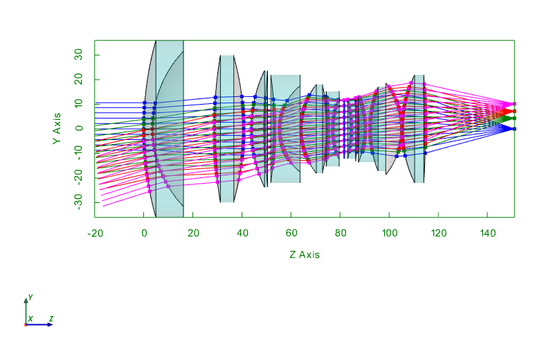
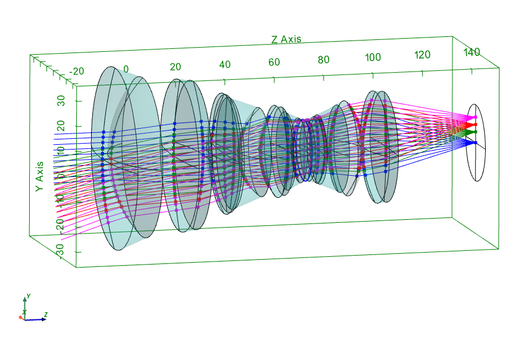
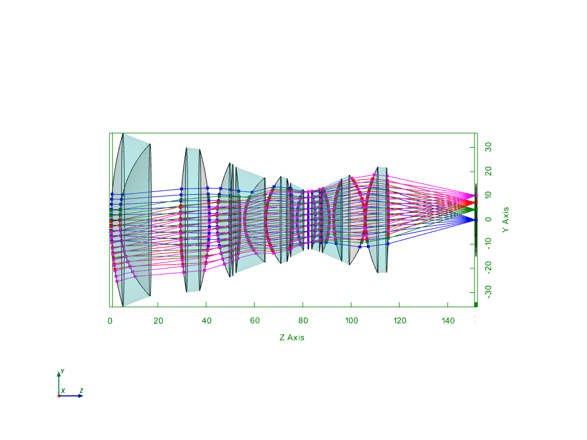

OpTaliX: Interactive 3D layout with Python
1.4. OpTaliX: Interactive 3D layout with Python¶
This section shows that an OpTaliX macro can be used to export all data relevant for generating interactive 3D layout plots with python. The macro looks like this:
! Get 3D layout incl. rays
!
print "start."
$maxfl = [si] ! get number of surfaces
!$sur = 2
$wl = 1
$fi = 1
out fil C:\Work\OpTaliX\Test\layout_3D.txt ! redirect output to file
print "C sur vgx vgy vgz r x y n"
do $sur = 0,$maxfl ! loop through all surfaces
! get vertex data
$vgx = [xsc s$sur]
$vgy = [ysc s$sur]
$vgz = [zsc s$sur]
$thi = [thi s$sur]
! get aperture data
$rmax = [sd s$sur] ! Maximum semi-diameter on surface sk.
! get glass material, refractive index
$n = [ind s$sur w$wl]
print 'format I3,F14.9, F14.9, F14.9, F14.9, F14.9, G13.5' $sur $vgx $vgy $vgz $rmax $n $thi
enddo
! get sag data, save in extra file
! SAG sk x_height y_height
out fil C:\Work\OpTaliX\Test\sag.txt
do $sur = 1,$maxfl
if ($sur > 0) then
$rmax = [sd s$sur]
$dr = $rmax/20
do $r = -$rmax,$rmax, $dr ! loop through radial coordinate
$xh = $r
$sagx = [SAG s$sur $xh 0]
$sagy = [SAG s$sur 0 $xh]
print 'format I3, F14.9, F14.9, F14.9' $sur $r $sagx $sagy
enddo
else
print 'format I3, F14.9, F14.9, F14.9' $sur 0 0 0
endif
enddo
! get homogeneous transformation data
out fil C:\Work\OpTaliX\Test\TMAT.txt ! redirect output to file
do $sur = 1,$maxfl
TMAT s$sur
enddo
! get layout ray data
!out fil C:\Work\OpTaliX\Test\layout_rays.txt ! redirect output to file
!$px = 0
!$py = 1
!do $sur = 1,$maxfl
! $y = [y s$sur f1 w1 $px $py]
! $x = [x s$sur f1 w1 $px $py]
! print 'format I3,F10.4, F10.4, F14.9,F14.9' $sur $px $py $x $y
!enddo
out t ! redirect output to terminal (windows)
!#include C:\ProgramData\OpTaliX\macro\ray_fan.mac
! #############################################################
! Get transverse ray aberration fan data
!
print "start layout ray export..."
$nfi = 4 ! number of fields defined
$nwl = 1 ! number of fields defined
$sf = [ss]
out fil C:\Work\OpTaliX\Test\ray_fan_py_all.txt ! redirect output to file
print "C number of surfaces, number of wavelengths, number of fields, stop surface: "
print $maxfl $nwl $nfi $sf
do $wl = 1, $nwl
$wavelength = [WL w$wl]
print $wl $wavelength
enddo
do $fi = 1, $nfi
$fxan = [XAN f$fi]
$fyan = [YAN f$fi]
print 'format I3 F13.9 ,F13.9' $fi $fxan $fyan
enddo
!
!$maxfl = [si] ! get number of surfaces
$py = 1
$px = 1
$dpy = 0.2
$dpx = 0.2
do $sur = 1,$maxfl
do $wl = 1, $nwl
do $fi = 1, $nfi
do $p = -$py,$py, $dpy
$x = [x s$sur f$fi w$wl 0 $p] ! rx = 0, ry = $p
$y = [y s$sur f$fi w$wl 0 $p]
$z = [z s$sur f$fi w$wl 0 $p]
print 'format I3, I3, I3, F14.9 ,F14.9,F14.9,F14.9' $sur $wl $fi $p $x $y $z
enddo
enddo
enddo
enddo
!
out t ! redirect output to terminal (windows)
out fil C:\Work\OpTaliX\Test\ray_fan_px_all.txt ! redirect output to file
!
do $sur = 1,$maxfl
do $wl = 1, $nwl
do $fi = 1, $nfi
do $p = -$px,$px, $dpx
$x = [x s$sur f$fi w$wl $p 0]
$y = [y s$sur f$fi w$wl $p 0]
$z = [z s$sur f$fi w$wl $p 0]
print 'format I3, I3, I3, F14.9, F14.9, F14.9, F14.9' $sur $wl $fi $p $x $y $z
enddo
enddo
enddo
enddo
!
out t ! redirect output to terminal (windows)
print "finished px and py ray fans."
out t ! redirect output to terminal (windows)
print "finished."
After this macro has been run within OpTaliX with the command “run L3D.mac” some files exists within the provided folder. These files are read by the python script below:
import numpy as np
import matplotlib.pylab as plt
import plotly.express as px
import plotly.graph_objs as go
from plotly.subplots import make_subplots
from plotly.colors import n_colors
import time
import math
import warnings
warnings.filterwarnings('ignore')
t0 = time.perf_counter()
def find_nearest(array, value):
array = np.asarray(array)
idx = (np.abs(array - value)).argmin()
return array[idx]
# ===================================
## settings:
draw_sagittal = 1 # draw sagittal rays
Opacity = 0.15 # opacity of drawn "glass" surfaces
show_labels = 0 # show labels: very slow in pyvista
plot_edge = 1 # plot minimal edges of lenses, corresponds to : EDG si..sj lin
edge_type = "lin" # options: "lin", "rec",
draw_rays_prior1 = 1 # draw rays prior to surface 1
thi_draw = 20 # draw rays prior to surface 1 for this length
draw_paraxial_data = 1
create_gif = 0 # generate a gif (of the rotating layout)
use_pythreejs = 1
# these are the files written by the macro "L3D.mac":
filename_py = r'C:\Work\OpTaliX\Test\RAY_FAN_PY_ALL.txt'
filename_px = r'C:\Work\OpTaliX\Test\RAY_FAN_PX_ALL.txt'
filename_layout3D = r'C:\Work\OpTaliX\Test\LAYOUT_3D.txt'
filename_sag = r'C:\Work\OpTaliX\Test\SAG.txt'
# ==================================
nsurfaces = int(np.loadtxt(filename_py, comments = 'C',max_rows=1)[0])
nwavelengths = int(np.loadtxt(filename_py, comments = 'C',max_rows=1)[1])
nfields = int(np.loadtxt(filename_py, comments = 'C',max_rows=1)[2])
stopsurface = int(np.loadtxt(filename_py, comments = 'C',max_rows=1)[3])
if nwavelengths > 1:
wavelengths = np.loadtxt(filename_py, comments = 'C',skiprows = 2, max_rows=nwavelengths)[:,1]
else:
wavelengths = np.loadtxt(filename_py, comments = 'C',skiprows = 2, max_rows=nwavelengths)[1]
fields = np.loadtxt(filename_py, comments = 'C',skiprows = 2+nwavelengths, max_rows=nfields)
rayfandata_py = np.loadtxt(filename_py, comments = 'C', skiprows = nwavelengths+2+nfields)
rayfandata_px = np.loadtxt(filename_px, comments = 'C', skiprows = nwavelengths+2+nfields)
n_fields = len(fields)
Lim = 0.02 # mm
#nwavelengths = 3
rayfandata_px_L= []
rayfandata_py_L = []
rayfandata_PY0_L = []
for s in range(0, nsurfaces):
rayfandata_px_LL = []
rayfandata_py_LL = []
rayfandata_px00 = rayfandata_px[rayfandata_px[:,0]==s+1]
rayfandata_py00 = rayfandata_py[rayfandata_py[:,0]==s+1] # select data by wavelength
for w in range(0, nwavelengths):
#print("w = ", w)
rayfandata_px_LLL = []
rayfandata_py_LLL = []
rayfandata_px0 = rayfandata_px00[rayfandata_px00[:,1]==w+1]
rayfandata_py0 = rayfandata_py00[rayfandata_py00[:,1]==w+1] # select data by wavelength
for i in range(0, n_fields):
rayfandata_px_LLL.append(rayfandata_px0[rayfandata_px0[:,2]==i+1])
rayfandata_py_LLL.append(rayfandata_py0[rayfandata_py0[:,2]==i+1] ) # select data by field
rayfandata_px_LL.append(np.array(rayfandata_px_LLL))
rayfandata_py_LL.append(np.array(rayfandata_py_LLL))
rayfandata_px_L.append(np.array(rayfandata_px_LL))
rayfandata_py_L.append(np.array(rayfandata_py_LL))
#filename_layout3D = r'C:\Work\OpTaliX\Test\LAYOUT_3D.txt'
layout_3D_0 = np.loadtxt(filename_layout3D, comments = 'C')
layout_3D = layout_3D_0[1:]
thi = layout_3D_0[:,-1]
# calculate starting points of fields
if draw_rays_prior1:
import pyvista as pv
xypos0 = np.tan(fields[:,1:]*math.pi/180)*thi[0]
xyzpos0 = np.stack((xypos0[:,0], xypos0[:,1], np.ones(len(xypos0))*thi[0])).T
# create vectors:
s = 0
mesh_prior1_L = []
mesh_prior1x_L = []
for w in range(0, nwavelengths):
for i in range(0, n_fields):
for p in range(0, len(rayfandata_py_L[0][w][i])):
pos1 = np.stack((rayfandata_py_L[s][w][i][p,4],rayfandata_py_L[s][w][i][p,5] , rayfandata_py_L[s][w][i][p,6]+ layout_3D[s,3])).T
vec = pos1-xyzpos0[i]
vec /= np.linalg.norm(vec)
vec *= thi_draw
pos0 = pos1 + vec
if p == 0:
mesh_prior1 = pv.lines_from_points(np.array([pos0,pos1]))
else:
mesh_prior1 += pv.lines_from_points(np.array([pos0,pos1]))
if draw_sagittal:
for p in range(0, len(rayfandata_px_L[0][w][i])):
pos1x = np.stack((rayfandata_px_L[s][w][i][p,4],rayfandata_px_L[s][w][i][p,5] , rayfandata_px_L[s][w][i][p,6]+ layout_3D[s,3])).T
vecx = pos1x-xyzpos0[i]
vecx /= np.linalg.norm(vecx)
vecx *= thi_draw
pos0x = pos1x + vecx
if p == 0:
mesh_prior1x = pv.lines_from_points(np.array([pos0x,pos1x]))
else:
mesh_prior1x += pv.lines_from_points(np.array([pos0x,pos1x]))
mesh_prior1_L.append(mesh_prior1)
if draw_sagittal:
mesh_prior1x_L.append(mesh_prior1x)
#filename_sag = r'C:\Work\OpTaliX\Test\SAG.txt'
sag = np.loadtxt(filename_sag, comments = 'C')
p = np.linspace(0, 2*np.pi, 50)
import pyvista as pv
sag_data_L = []
mesh_L = []
mesh_prof_L = []
mesh_prof_Ly = []
mesh_circ_L = []
Z0 = 0
def circle_points(R=1):
p = np.linspace(0, 2*np.pi, 50)
x, y = R*np.cos(p), R*np.sin(p)
#F = x**2 + y**2
return x, y
sag_data_stop = sag[sag[:,0]==stopsurface]
r_stop = np.max(sag_data_stop[:,1])
n_mat = layout_3D[:,5]
r_max_L = []
points_circ_L = []
points_circ_L2 = []
surf_L = []
points_label_L = []
r_L = []
for s in range(0, nsurfaces):
sag_data = sag[sag[:,0]==s+1]
sag_data_L.append(sag_data)
r = sag_data[:,1]
r_L.append(r)
#if n_mat[s-1] > 1:
# r2 = r_L[s-1]
r_max_L.append(np.max(r))
R, P = np.meshgrid(r, p)
# Express the mesh in the cartesian system.
X, Y = R*np.cos(P), R*np.sin(P)
x_c, y_c= circle_points(R = np.max(r))
#if n_mat[s-1] > 1:
# x_c, y_c= circle_points(R = np.max(r2))
sa = sag_data[:,2:]
Z = np.repeat(sa[np.newaxis, :, :], len(p), axis=0) + layout_3D[s,3]
points = np.stack((X.flatten(), Y.flatten(), Z[:,:,0].flatten())).T
mesh = pv.PolyData(points).delaunay_2d()
mesh_prof_x = pv.lines_from_points(np.stack((r, np.zeros(len(r)), sa[:,0]+ layout_3D[s,3])).T)
mesh_prof_y = pv.lines_from_points(np.stack((np.zeros(len(r)), r, sa[:,1]+ layout_3D[s,3])).T)
points_circ = np.stack((x_c, y_c, layout_3D[s,3]*np.ones(len(y_c))+ np.min(sa)+np.max(sa) )).T
mesh_circ = pv.lines_from_points(points_circ)
mesh_L.append(mesh)
mesh_prof_L.append(mesh_prof_x)
mesh_prof_Ly.append(mesh_prof_y)
mesh_circ_L.append(mesh_circ)
points_circ_L.append(points_circ)
points_circ_L2.append(points_circ)
points_label_L.append(points_circ_L[s][int(len(points_circ_L[s])/2)])
atest = (np.stack((np.zeros(len(points_circ_L[s])), np.zeros(len(points_circ_L[s])), np.ones(len(points_circ_L[s])))).T)
points_element_L = []
for s in range(0, nsurfaces):
if n_mat[s] > 1:
if edge_type == "lin":
points_element = np.vstack((points_circ_L[s], points_circ_L[s+1] ))
pointsc = pv.PolyData(points_element)
surf = pointsc.delaunay_2d()#.reconstruct_surface()
surf_L.append(surf)
elif edge_type == "rec":
sa = sag_data_L[s][:,2:]
sa2 = sag_data_L[s+1][:,2:]
M1 = np.min(sa)+np.max(sa)
M2 = np.min(sa2)+np.max(sa2)
#print(M1-M2)
mesh = pv.lines_from_points(points_circ_L[s])
surf = mesh.extrude((0, 0, M2-M1+thi[s+1] ), capping=True)
mesh_circ_L[s] += pv.lines_from_points(points_circ_L[s]+atest*(M2-M1+thi[s+1]))
surf_L.append(surf)
#Z0+= layout_3D[i,3]
#for s in range(0, nsurfaces):
# if n_mat[s]>1:
s =1
sag_data = sag[sag[:,0]==s+1]
sag_data2 = sag[sag[:,0]==s]
sag_data_L.append(sag_data)
r = sag_data2[:,1]
sa = sag_data[:,2:]
x_c, y_c= circle_points(R = np.max(r))
points_circ = np.stack((x_c, y_c, layout_3D[s,3]*np.ones(len(y_c))+ np.min(sa)+np.max(sa) )).T
points_circ_Lt = points_circ
points_element = np.vstack((points_circ_L[s], points_circ_Lt))
pointsc = pv.PolyData(points_element)
surf = pointsc.delaunay_2d()
mesh_ray_Ly = []
points_Ly = []
mesh_p_L = []
mesh_ray_Lx = []
mesh_p_L_x = []
for w in range(0, nwavelengths):
for i in range(0, n_fields):
for p in range(0, len(rayfandata_py_L[0][w][i])):
ray = []
ray_x = []
for s in range(0, nsurfaces):
r = np.stack((rayfandata_py_L[s][w][i][p,4],rayfandata_py_L[s][w][i][p,5] , rayfandata_py_L[s][w][i][p,6]+ layout_3D[s,3])).T
ray.append(r)
ray = np.array(ray)
mesh_ray = pv.lines_from_points(ray)
mesh_p0 = pv.PolyData(ray)
if p == 0:
mesh_ray_g = mesh_ray
mesh_p = mesh_p0
else:
mesh_ray_g += mesh_ray
mesh_p += mesh_p0
for p in range(0, len(rayfandata_px_L[0][w][i])):
ray_x = []
for s in range(0, nsurfaces):
r_x = np.stack((rayfandata_px_L[s][w][i][p,4],rayfandata_px_L[s][w][i][p,5] , rayfandata_px_L[s][w][i][p,6]+ layout_3D[s,3])).T
ray_x.append(r_x)
ray_x = np.array(ray_x)
mesh_ray_x = pv.lines_from_points(ray_x)
mesh_p0_x = pv.PolyData(ray_x)
if p == 0:
mesh_ray_g_x = mesh_ray_x
mesh_p_x = mesh_p0_x
else:
mesh_ray_g_x += mesh_ray_x
mesh_p_x += mesh_p0_x
mesh_ray_Ly.append(mesh_ray_g)
mesh_p_L.append(mesh_p)
mesh_ray_Lx.append(mesh_ray_g_x)
mesh_p_L_x.append(mesh_p_x)
# get refractive index / material
# fill volume between surfaces with glass.
from pyvistaqt import BackgroundPlotter
if 'pl' in globals():
pl.close()
pl.clear()
if 1:
if create_gif:
pl = pv.Plotter(notebook=False, off_screen=True)
else:
#pl = BackgroundPlotter(shape=(1, 1))
pl = pv.Plotter()
#pl = pv.PlotterITK()
#pl = pv.Plotter(shape=(1, 1))
pl.set_background("white") # "gray", top="black"
#plotter.subplot(0, 0)
Colorline = "green"
pv.create_axes_orientation_box(line_width=1, text_scale=0.366667, edge_color=Colorline, x_color=None, y_color=None, z_color=None, xlabel='X', ylabel='Y', zlabel='Z', x_face_color='red', y_face_color='green', z_face_color='blue', color_box=False, label_color=None, labels_off=False, opacity=0.5)
pl.add_axes(color = Colorline)
pl.add_bounding_box(color=Colorline, corner_factor=0.5, line_width=None, opacity=1.0, render_lines_as_tubes=False, lighting=None, reset_camera=None, outline=True, culling='front')
pl.show_bounds(font_size = 15, color=Colorline)
#plotter.show()
poly = pv.PolyData(np.array(points_label_L))
poly["My Labels"] = [f"{i}" for i in range(poly.n_points)]
for s in range(0, nsurfaces):
if n_mat[s]>1: #or n_mat[s-1]>1:
color_aper = 'red'
color_aper = 'black'
else:
color_aper = 'black'
if s == stopsurface-1:
color_aper = 'blue'
Linewidth = 2
else:
Linewidth = 1
if s == nsurfaces-1:
colorS = "white"
ac1 = pl.add_mesh(mesh_L[s],show_edges=False, opacity = 0, color = colorS)
else:
if n_mat[s]>1:
colorS = "cyan"
else:
colorS = "white"
ac1 = pl.add_mesh(mesh_L[s],show_edges=False, opacity = Opacity, color = colorS)
ac2 = pl.add_mesh(mesh_prof_L[s],show_edges= True, opacity = 1, color = 'black')
ac3 = pl.add_mesh(mesh_prof_Ly[s],show_edges= True, opacity = 1, color = 'black')
ac4 = pl.add_mesh(mesh_circ_L[s],show_edges= True, opacity = 1, color = color_aper, line_width = Linewidth)
if show_labels:
pl.add_point_labels(poly, "My Labels", point_size=20, font_size=36)
cm_subsection = np.linspace(0.0, 1.0, n_fields)
from matplotlib import cm
colors = ['blue', 'green', 'red', 'magenta']
for i in range(0, len(mesh_ray_Ly)):
pl.add_mesh(mesh_ray_Ly[i],show_edges= True, opacity = 1, color = colors[i])
pl.add_mesh(mesh_p_L[i],show_edges= True, opacity = 1, color = colors[i])
if draw_rays_prior1:
pl.add_mesh(mesh_prior1_L[i],show_edges= True, opacity = 1, color = colors[i])
if draw_sagittal:
for i in range(0, len(mesh_ray_Lx)):
pl.add_mesh(mesh_ray_Lx[i],show_edges= True, opacity = 1, color = colors[i])
pl.add_mesh(mesh_p_L_x[i],show_edges= True, opacity = 1, color = colors[i])
if draw_rays_prior1:
pl.add_mesh(mesh_prior1x_L[i],show_edges= True, opacity = 1, color = colors[i])
if plot_edge:
for i in range(0, len(surf_L)):
if use_pythreejs:
pl.add_mesh(surf_L[i], color = 'cyan', opacity = Opacity) # roughness=0, metallic=0.5
else:
pl.add_mesh(surf_L[i], color = 'cyan', opacity = Opacity)
#pl.add_mesh(points_circ_Lt, color = 'orange', opacity = Opacity)
#pl.add_mesh(surf, color = 'red', opacity = 1)
# cpos = [
# (21.9930, 21.1810, -30.3780),
# (-1.1640, -1.3098, -0.1061),
# (0.8498, -0.2515, 0.4631),
# ]
pl.camera_position = 'zy'
pl.enable_parallel_projection()
#pl.enable_image_style()
#pl.view_zy()
#if not create_gif:
# pl.show(jupyter_backend='pythreejs') # jupyter_backend='pythreejs'
# do some animation
rot = np.linspace(1, 360, num = 36)
# Open a gif
if create_gif:
pl.open_gif("rotate3D.gif")
for r in range(0, len(rot)):
pl.camera.azimuth = rot[r]
print("frame = ", r)
pl.write_frame()
pl.close()
print("Elapsed time: ", np.round(time.perf_counter()-t0, decimals = 4), " s")
---------------------------------------------------------------------------
ModuleNotFoundError Traceback (most recent call last)
~\AppData\Local\Temp\ipykernel_10648\3795981473.py in <module>
312
313
--> 314 from pyvistaqt import BackgroundPlotter
315
316 if 'pl' in globals():
ModuleNotFoundError: No module named 'pyvistaqt'

And with lin. edge:

Within jupyter the backend “pythreejs” can be used (here also a sagittal ray fan is plotted):
if use_pythreejs:
pl.show(jupyter_backend='pythreejs')
else:
pl.show()
A gif can be generated as well and is inserted below:
gif_path = r'C:\Users\herbst\.spyder-py3\Python Scripts\Optalix\rotate3D.gif'
from IPython.display import Image
#display(Image(data=open(gif_path,'rb').read(), format='png'))
with open(gif_path,'rb') as f:
display(Image(data=f.read(), format='png'))
#import ipywidgets as widgets
#display(widgets.HTML(f'<img src="{gif_path}" width="750" align="center">'))
